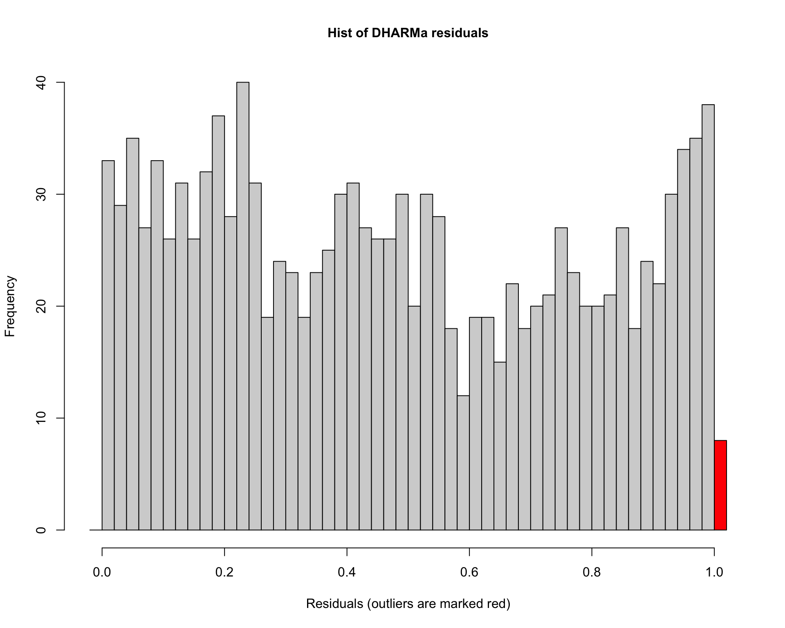
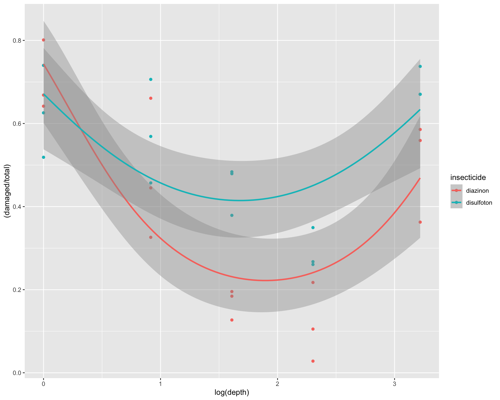
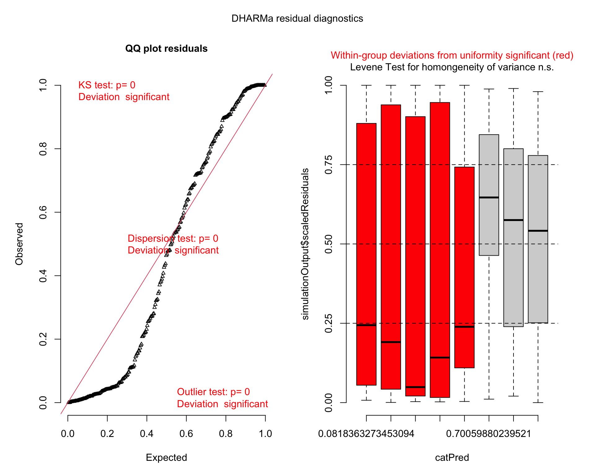

Chapter 6 Module 6
6.1 6A. Poisson GLMMs
In this module we will go over a variety of more advanced models. We will start with Poisson GLMMs. Let’s first load the libraries we will need:
library(tidyverse)
library(emmeans)
library(car)
library(agridat)
library(lme4)
library(lmerTest)
library(glmmTMB)
library(DHARMa)
library(performance)
library(MuMIn)
library(bbmle)
library(aods3)Let’s load in and read about the beall.webworms dataset. The variables of interest are the y-count of webworms, spray- spray treatment, and lead-lead treatment. Don’t worry about the block or other variables for now.
data("beall.webworms")
d1 <- beall.webworms
?beall.webworms ## info about the beall.webworms datasethead(d1) ## view data set## row col y block trt spray lead
## 1 1 1 1 B1 T1 N N
## 2 2 1 0 B1 T1 N N
## 3 3 1 1 B1 T1 N N
## 4 4 1 3 B1 T1 N N
## 5 5 1 6 B1 T1 N N
## 6 6 1 0 B2 T1 N NLet’s examine a plot of data:
ggplot(d1, aes(x=spray, y=y, fill=lead)) +
geom_violin(scale="width", adjust=2) +
geom_point(position = position_jitterdodge(jitter.width=.5,
jitter.height=.1,
dodge.width = 1),
alpha=.1)+
facet_wrap(~block)
Here we create two models, r1 and r2. They were previously used in module 4C:
r1 <- glm(y ~ spray * lead, data=d1, family="poisson")
summary(r1)##
## Call:
## glm(formula = y ~ spray * lead, family = "poisson", data = d1)
##
## Deviance Residuals:
## Min 1Q Median 3Q Max
## -1.6733 -1.0046 -0.9081 0.6141 4.2771
##
## Coefficients:
## Estimate Std. Error z value Pr(>|z|)
## (Intercept) 0.33647 0.04688 7.177 7.12e-13 ***
## sprayY -1.02043 0.09108 -11.204 < 2e-16 ***
## leadY -0.49628 0.07621 -6.512 7.41e-11 ***
## sprayY:leadY 0.29425 0.13917 2.114 0.0345 *
## ---
## Signif. codes: 0 '***' 0.001 '**' 0.01 '*' 0.05 '.' 0.1 ' ' 1
##
## (Dispersion parameter for poisson family taken to be 1)
##
## Null deviance: 1955.9 on 1299 degrees of freedom
## Residual deviance: 1720.4 on 1296 degrees of freedom
## AIC: 3125.5
##
## Number of Fisher Scoring iterations: 6Anova(r1)## Analysis of Deviance Table (Type II tests)
##
## Response: y
## LR Chisq Df Pr(>Chisq)
## spray 188.707 1 < 2.2e-16 ***
## lead 42.294 1 7.853e-11 ***
## spray:lead 4.452 1 0.03485 *
## ---
## Signif. codes: 0 '***' 0.001 '**' 0.01 '*' 0.05 '.' 0.1 ' ' 1emmeans(r1, ~spray:lead, type='response') ## spray lead rate SE df asymp.LCL asymp.UCL
## N N 1.400 0.0656 Inf 1.277 1.535
## Y N 0.505 0.0394 Inf 0.433 0.588
## N Y 0.852 0.0512 Inf 0.758 0.959
## Y Y 0.412 0.0356 Inf 0.348 0.488
##
## Confidence level used: 0.95
## Intervals are back-transformed from the log scaleWe check overdispersion in the model:
check_overdispersion(r1) # overdispersion ratio calculator from performance## # Overdispersion test
##
## dispersion ratio = 1.355
## Pearson's Chi-Squared = 1755.717
## p-value = < 0.001Now let’s implment the r2 model with a negative binomial error distribution:
r2 <- glmmTMB(y ~ spray * lead, data=d1, family="nbinom2")
Anova(r2)## Analysis of Deviance Table (Type II Wald chisquare tests)
##
## Response: y
## Chisq Df Pr(>Chisq)
## spray 125.5047 1 < 2.2e-16 ***
## lead 26.8005 1 2.256e-07 ***
## spray:lead 3.3942 1 0.06542 .
## ---
## Signif. codes: 0 '***' 0.001 '**' 0.01 '*' 0.05 '.' 0.1 ' ' 1emmeans(r2, ~spray:lead, type='response') ## spray lead response SE df lower.CL upper.CL
## N N 1.400 0.0855 1295 1.242 1.578
## Y N 0.505 0.0441 1295 0.425 0.599
## N Y 0.852 0.0611 1295 0.740 0.981
## Y Y 0.412 0.0391 1295 0.342 0.497
##
## Confidence level used: 0.95
## Intervals are back-transformed from the log scaleNow let’s simulate residuals for poisson and negative binomial models:
plot(simulateResiduals(r1))hist(simulateResiduals(r1)) ## histogram should be flat
plot(simulateResiduals(r2))
hist(simulateResiduals(r2)) ## histogram should be flat
6.2 Improving the models: What’s next?
What’s next? Any aspects of the experimental design missing from the model?
We can construct models that includes any missing factors.
We can also make an individual-level random effect to use for overdispersed poisson:
d1$obs <- 1:length(d1$y) ## makes a unique number for each row in datasetWe can also create other models that include different random effects that account for blocks:
r0 <- glmmTMB(y ~ spray * lead, data=d1, family="gaussian") ### gaussian glm just to see how bad it really is
r1 <- glmmTMB(y ~ spray * lead, data=d1, family="poisson") ### poisson glm
r2 <- glmmTMB(y ~ spray * lead, data=d1, family="nbinom2") ### nb glm
r3 <- glmmTMB(y ~ spray * lead + (1|obs), data=d1, family="poisson") ### overdispersed poisson glm
r4 <- glmmTMB(y ~ spray * lead + (1|block), data=d1, family="nbinom2") ### nb w/ block
r5 <- glmmTMB(y ~ spray * lead + (1|obs) + (1|block), data=d1, family="poisson") ### OD poisson w/ blockSix models above differ only distribution and random effects. Fixed effects are the same. We can now use AIC for selecting the most appropriate distribution and random effects:
#### for model selection, use AIC or likihood ratio test
model.sel(r0,r1,r2,r3,r4,r5) ## from MuMIn## Model selection table
## cnd((Int)) dsp((Int)) cnd(led) cnd(spr) cnd(led:spr) family
## r4 0.2835 + + + + nbinom2(log)
## r5 0.1399 + + + + poisson(log)
## r3 0.1042 + + + + poisson(log)
## r2 0.3365 + + + + nbinom2(log)
## r1 0.3365 + + + + poisson(log)
## r0 1.4000 + + + + gaussian(identity)
## random df logLik AICc delta weight
## r4 c(b) 6 -1497.706 3007.5 0.00 0.903
## r5 c(o)+c(b) 6 -1499.931 3011.9 4.45 0.097
## r3 c(o) 5 -1518.031 3046.1 38.63 0.000
## r2 5 -1521.484 3053.0 45.54 0.000
## r1 4 -1558.739 3125.5 118.03 0.000
## r0 5 -1929.308 3868.7 861.18 0.000
## Models ranked by AICc(x)
## Random terms:
## c(b) = 'cond(1 | block)'
## c(o) = 'cond(1 | obs)'AICtab(r0,r1,r2,r3,r4,r5,base=T,logLik=T,weights=T) ## from bbmle## logLik AIC dLogLik dAIC df weight
## r4 -1497.7 3007.4 431.6 0.0 6 0.903
## r5 -1499.9 3011.9 429.4 4.5 6 0.097
## r3 -1518.0 3046.1 411.3 38.7 5 <0.001
## r2 -1521.5 3053.0 407.8 45.6 5 <0.001
## r1 -1558.7 3125.5 370.6 118.1 4 <0.001
## r0 -1929.3 3868.6 0.0 861.2 5 <0.001Now for further model interpretation you can examine residuals, fixed effects using Anova(), emmeans, etc.
6.3 6B. Binomial and Beta GLMMs
6.3.1 Binomial
In this section we look at the binomial distribution. Let’s load in the data we will use:
data("wheatley.carrot")
?wheatley.carrotLet’s clean it up a bit:
dat1 <- wheatley.carrot %>% filter(insecticide!='nil')
dat1$propdmg <- dat1$damaged/dat1$total
head(dat1) ## treatment insecticide depth rep damaged total propdmg
## 1 T01 diazinon 1.0 R1 120 187 0.64171123
## 2 T02 diazinon 2.5 R1 60 184 0.32608696
## 3 T03 diazinon 5.0 R1 35 179 0.19553073
## 4 T04 diazinon 10.0 R1 5 178 0.02808989
## 5 T05 diazinon 25.0 R1 66 182 0.36263736
## 6 T06 disulfoton 1.0 R1 97 187 0.51871658hist(dat1$propdmg)
Now let’s plot out the data. Note that for plotting we can use the “beta_family” although for analysis we use “binomial”.
ggplot(dat1, aes(x=log(depth),
y=(damaged/total), color=insecticide)) +
geom_point(size=3) +
theme_bw(base_size = 16)
ggplot(dat1, aes(x=log(depth), y=(damaged/total), color=insecticide)) +
geom_point(size=3) +
geom_smooth(method='glm',
method.args=list(family="beta_family"),
formula = y~x) +
theme_bw(base_size = 16)ggplot(dat1, aes(x=log(depth), y=(damaged/total),
color=insecticide)) + geom_point() +
geom_smooth(method='glm',
method.args=list(family="beta_family"),
formula = y~x+I(x^2))
Now let’s build two different binomical GLMMs with different set ups:
mod1 <- glmmTMB(cbind(damaged,total-damaged) ~ insecticide * depth + (1|rep), data=dat1, family='binomial')
mod2 <- glmmTMB(cbind(damaged,total-damaged) ~ insecticide * depth + I(depth**2) + (1|rep), data=dat1, family='binomial')Note above that mod2 is applying a non-linear modification where we include depth and depth squared. The “**” is another way of saying raise depth to the 2nd power. The I() isolate this and tells the R interpreter that the model is including a second order fixed effect. For more info check ?formula.
We can plot residuals:
plot(simulateResiduals(mod1))plot(simulateResiduals(mod2)) Which of the two is better?
Which of the two is better?
We can also run ANOVAs on the models:
Anova(mod1)## Analysis of Deviance Table (Type II Wald chisquare tests)
##
## Response: cbind(damaged, total - damaged)
## Chisq Df Pr(>Chisq)
## insecticide 91.449 1 < 2.2e-16 ***
## depth 2.543 1 0.1107873
## insecticide:depth 14.525 1 0.0001383 ***
## ---
## Signif. codes: 0 '***' 0.001 '**' 0.01 '*' 0.05 '.' 0.1 ' ' 1Anova(mod2)## Analysis of Deviance Table (Type II Wald chisquare tests)
##
## Response: cbind(damaged, total - damaged)
## Chisq Df Pr(>Chisq)
## insecticide 111.62 1 < 2.2e-16 ***
## depth 563.71 1 < 2.2e-16 ***
## I(depth^2) 594.17 1 < 2.2e-16 ***
## insecticide:depth 15.85 1 6.858e-05 ***
## ---
## Signif. codes: 0 '***' 0.001 '**' 0.01 '*' 0.05 '.' 0.1 ' ' 16.4 6C. Beta Distributions
In this section we show an example of applying the beta family using true proportions (or percentages). First let’s load data:
b1 <-read_csv("LynnETAL_2022_Ecography_sodCaseStudy.csv") %>%
filter(species=='SALA')
head(b1)## # A tibble: 6 × 18
## study family speci…¹ species meas_…² site latit…³ longi…⁴ o_lat o_long
## <chr> <chr> <chr> <chr> <chr> <chr> <dbl> <dbl> <dbl> <dbl>
## 1 RivkinETAL_… Alism… Sagitt… SALA 2015 ACT-… 44.5 -77.3 NA NA
## 2 RivkinETAL_… Alism… Sagitt… SALA 2015 BPV-… 45.7 -77.6 NA NA
## 3 RivkinETAL_… Alism… Sagitt… SALA 2015 BSM-… 44.8 -76.1 NA NA
## 4 RivkinETAL_… Alism… Sagitt… SALA 2015 BTC-… 44.2 -76.8 NA NA
## 5 RivkinETAL_… Alism… Sagitt… SALA 2015 CBT-… 47.4 -79.7 NA NA
## 6 RivkinETAL_… Alism… Sagitt… SALA 2015 CFR-… 44.7 -77.1 NA NA
## # … with 8 more variables: mean_herb <dbl>, na_wdcpc <dbl>, mat <dbl>,
## # iso <dbl>, dtr <dbl>, precip <dbl>, aet <dbl>, notes <chr>, and abbreviated
## # variable names ¹species_name, ²meas_year, ³latitude, ⁴longitudeLet’s examine a histogram:
hist(b1$mean_herb) ## examine histogram. Data are entered as percentage (0-100%)
Let’s plot out the data. Note: data was collected at 42 unique sites (one data point per site).
ggplot(b1 , aes(x=latitude, y=mean_herb)) +
geom_point()
Now we need to convert to proportion and then do a small transformation to remove 0 and 1:
b1$mean_herb1 <- (b1$mean_herb/100)
b1$mean_herb1 <- (b1$mean_herb1*(length(b1$mean_herb1)-1)+.5)/length(b1$mean_herb1)Let’s plot this:
ggplot(b1, aes(x=latitude, y=mean_herb1)) + geom_point() +
geom_smooth(method='glm',
method.args=list(family="beta_family"),
formula = y~x)
Now let’s build a beta GLMM:
bm1 <- glmmTMB(mean_herb1 ~ latitude, data=b1, family='beta_family')
Anova(bm1)## Analysis of Deviance Table (Type II Wald chisquare tests)
##
## Response: mean_herb1
## Chisq Df Pr(>Chisq)
## latitude 9.1383 1 0.002503 **
## ---
## Signif. codes: 0 '***' 0.001 '**' 0.01 '*' 0.05 '.' 0.1 ' ' 1Check the summary:
summary(bm1)## Family: beta ( logit )
## Formula: mean_herb1 ~ latitude
## Data: b1
##
## AIC BIC logLik deviance df.resid
## -126.9 -121.7 66.5 -132.9 39
##
##
## Dispersion parameter for beta family (): 30.5
##
## Conditional model:
## Estimate Std. Error z value Pr(>|z|)
## (Intercept) 5.69631 2.58221 2.206 0.0274 *
## latitude -0.17525 0.05797 -3.023 0.0025 **
## ---
## Signif. codes: 0 '***' 0.001 '**' 0.01 '*' 0.05 '.' 0.1 ' ' 1Plot and check residuals:
plot(simulateResiduals(bm1)) ## QQ plot is good. Resid vs pred is wiggle, probably ok.
6.5 6D. Problem set
- Problem set with real data (Rivkin et al. 2018 Am J Bot)
Herbivory data was collected on 43 populations of an aquatic plant across a latitudinal gradient in Canada. At each population, many plants (~5-15) were examined for herbivory damage. Some additional covariates were recorded, such as Competition around the plant (1-3 from less to more) and plant height (cm).
Read in data:
d1 <-read.csv("ajb21098-sup-0002-appendixs2.csv")
head(d1)## Population Latitude Longitude Competition Individual PlantHeight LeafDamage
## 1 ACT-ON 44.54829 -77.32384 2 4 41.0 0.02000000
## 2 ACT-ON 44.54829 -77.32384 2 6 43.0 0.03000000
## 3 ACT-ON 44.54829 -77.32384 2 18 17.5 0.04000000
## 4 ACT-ON 44.54829 -77.32384 2 2 37.0 0.06666667
## 5 ACT-ON 44.54829 -77.32384 2 3 48.0 0.07000000
## 6 ACT-ON 44.54829 -77.32384 2 12 39.5 0.08000000
## LarvalAbundance
## 1 0
## 2 0
## 3 0
## 4 1
## 5 0
## 6 0hist(d1$LeafDamage) Let’s remove 0’s and 1’s (see Smithson & Verkuilen 2006 or Douma & Weedon 2018):
Let’s remove 0’s and 1’s (see Smithson & Verkuilen 2006 or Douma & Weedon 2018):
d1$LeafDamage <- (d1$LeafDamage*(length(d1$LeafDamage)-1)+.5)/length(d1$LeafDamage)Now plot data:
ggplot(d1 , aes(x=Latitude, y=LeafDamage)) +
geom_point() +
geom_smooth(method='glm',
method.args=list(family="beta_family"),
formula = y~x)
Question: Does herbivory increase towards the equator? How do residuals look? Any way to improve them?
- Problem set with real data (Rivkin et al. 2018 Am J Bot), Rats dataset with only females. Half treated with a drug and the other half were untreated. Then they checked for tumors.Does the drug reduce probability of developing tumor? After 50 days? After 100 days?
Load data:
library(survival)
rats <- rats %>% filter(sex=="f")
?rats## Help on topic 'rats' was found in the following packages:
##
## Package Library
## aods3 /Users/leoohyama/Library/R/x86_64/4.1/library
## survival /Library/Frameworks/R.framework/Versions/4.1/Resources/library
##
##
## Using the first match ...head(rats)## litter rx time status sex
## 1 1 1 101 0 f
## 2 1 0 49 1 f
## 3 1 0 104 0 f
## 4 3 1 104 0 f
## 5 3 0 102 0 f
## 6 3 0 104 0 fPlot data:
ggplot(rats , aes(x=time, y=status)) +
geom_point() +
geom_smooth(method='glm',
method.args=list(family="binomial"),
formula = y~x) +
facet_wrap(~rx)
6.6 6E.x Zero-Inflated Models
In this section we will go over applying zero-inflated models. First let’s load the data (wheatley carrot infection by carrot fly larvae):
data("ridout.appleshoots")Let’s clean up the data and check out the distribution of the data in question:
dat1 <- ridout.appleshoots %>% mutate(photo=as.factor(photo))
hist(dat1$roots)
Now let’s run several models: a Poisson, a negative binomial, and a negative binomial with a general intercept for zero inflation:
## poisson model
mod1 <- glmmTMB(roots ~ photo * bap , data=dat1, family='poisson')
plot(simulateResiduals(mod1))
## negative binomial model
mod2 <- glmmTMB(roots ~ photo * bap , data=dat1, family='nbinom2')
plot(simulateResiduals(mod2))
## negative binomial w/ a general intercept for zero inflation (ie. ZI equal for all observations)
mod3 <- glmmTMB(roots ~ photo * bap , data=dat1, family='nbinom2', zi=~1)
plot(simulateResiduals(mod3))
summary(mod3) ## back-transform ZI intercept (exp(p)/(1+exp(p)))## Family: nbinom2 ( log )
## Formula: roots ~ photo * bap
## Zero inflation: ~1
## Data: dat1
##
## AIC BIC logLik deviance df.resid
## 1342.4 1364.0 -665.2 1330.4 264
##
##
## Dispersion parameter for nbinom2 family (): 12.6
##
## Conditional model:
## Estimate Std. Error z value Pr(>|z|)
## (Intercept) 1.895659 0.072535 26.134 <2e-16 ***
## photo16 -0.029863 0.135890 -0.220 0.8261
## bap 0.008760 0.006724 1.303 0.1927
## photo16:bap -0.032083 0.013065 -2.456 0.0141 *
## ---
## Signif. codes: 0 '***' 0.001 '**' 0.01 '*' 0.05 '.' 0.1 ' ' 1
##
## Zero-inflation model:
## Estimate Std. Error z value Pr(>|z|)
## (Intercept) -1.226 0.151 -8.125 4.49e-16 ***
## ---
## Signif. codes: 0 '***' 0.001 '**' 0.01 '*' 0.05 '.' 0.1 ' ' 1What do we expect to cause the zero inflation? We can check out further details in the data’s metadata:
??ridout.appleshootsggplot(dat1, aes(x=roots)) +
geom_histogram() +
facet_grid(bap~photo) +
theme_bw(base_size=16)
Now let’s run a negative binomial with zero inflation specified by treatment:
mod4 <- glmmTMB(roots ~ photo * bap , data=dat1, family='nbinom2', zi=~photo)
summary(mod4)## Family: nbinom2 ( log )
## Formula: roots ~ photo * bap
## Zero inflation: ~photo
## Data: dat1
##
## AIC BIC logLik deviance df.resid
## 1252.3 1277.5 -619.2 1238.3 263
##
##
## Dispersion parameter for nbinom2 family (): 13.8
##
## Conditional model:
## Estimate Std. Error z value Pr(>|z|)
## (Intercept) 1.898347 0.071568 26.525 <2e-16 ***
## photo16 -0.023525 0.130488 -0.180 0.8569
## bap 0.008222 0.006689 1.229 0.2190
## photo16:bap -0.029492 0.012427 -2.373 0.0176 *
## ---
## Signif. codes: 0 '***' 0.001 '**' 0.01 '*' 0.05 '.' 0.1 ' ' 1
##
## Zero-inflation model:
## Estimate Std. Error z value Pr(>|z|)
## (Intercept) -4.4000 0.8446 -5.210 1.89e-07 ***
## photo16 4.2831 0.8627 4.965 6.87e-07 ***
## ---
## Signif. codes: 0 '***' 0.001 '**' 0.01 '*' 0.05 '.' 0.1 ' ' 1Plot residuals:
plot(simulateResiduals(mod4))Now let’s compare all models with AIC. Which one was the best? Why do you think?
### check with AIC
AIC(mod1,mod2,mod3,mod4)## df AIC
## mod1 4 1575.916
## mod2 5 1412.415
## mod3 6 1342.435
## mod4 7 1252.333